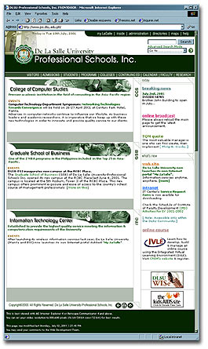

|
Documentation
Office : Updates
The
PSI web site
by: Joie Alvarez
The PSI web site was finally up. The main page has a dark
green corporate look and features the big three of the DLS-Professional Schools Inc. namely CCS, GSB, and of course, ITC. The main
links are on the header part of the page. The online broadcast,
announcements, news, and other featured info are grouped on
the right panel of the page. The search engine, powered by
Atomz, is found on top of every page. It also has a web site
index and a site map to make the user familiar with the organization
of information of the PSI web site. The site employs the ASP
technology for easy maintenance and quick redesign. Visit
the PSI web site now, it is best viewed with the version 4
or above of either MS Internet Explorer or Netscape Navigator.
Survey
Form for DLSU-Manila Site
by:
Joie Alvarez
Once
again, Docu Office came up with an online survey form for
the DLSU-Manila web site. This survey form aims to know the
various purposes of the visitors going to our web site, to
determine the confidence of the users in finding the information
they want, to determine the usability level of the web site,
and to know what the surfers want out of the DLSU Manila web
site. This survey will run until the end of August 2001. Inputs
from this survey will help the DLSU Web Development Team in
improving the design, structure, and organization of information
for the next version of the DLSU-Manila page.
The
AUNVirtualU Project
by:
Joie Alvarez
Docu
Office assisted CREM in its AUN Virtual University web site
project in terms of inserting java script to create a drop-down
menu effect on one of its major links. However, because of
the limitation of the frames layout, which was employed to
the AUNVirtualU web pages, the drop-down menu was not utilized.
On the other hand, Docu Office also assisted them in providing
perl script to handle AUN's feedback form, and in reindexing
the site to make it searchable through Atomz.
ITC
in Powerpoint
by:
Joie Alvarez
ITC
History was summarized into a PowerPoint show presented last
June 22, 2001 during the ITC Day. This was one of the exhibits
of the Docu Office together with the Evolution of DLSU web
sites and the streaming videos of the interviews of Sammy
and Johnny for Studio 23's Digital Tour TV broadcast.
next
page >>
|